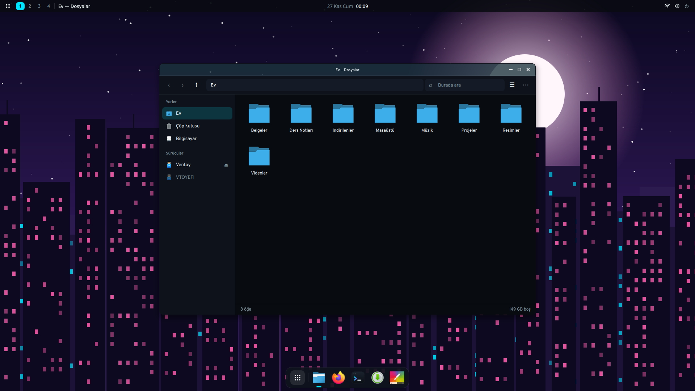
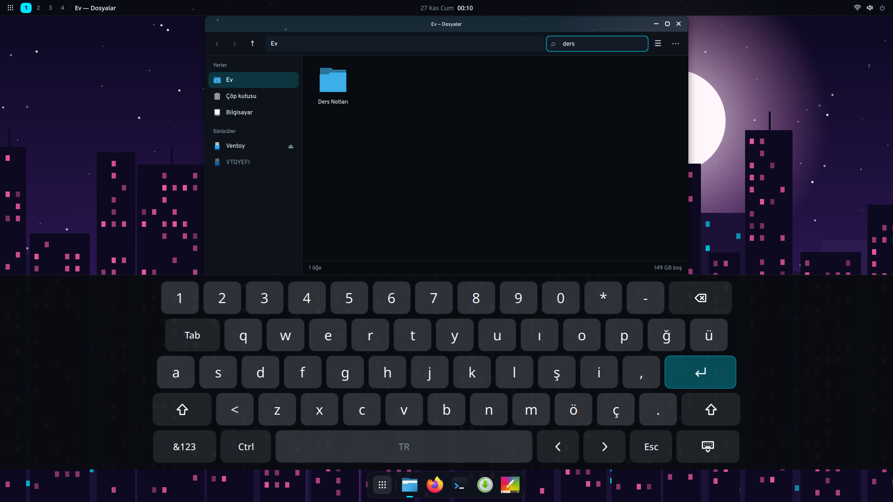
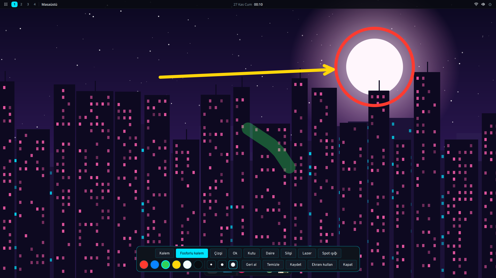

Hyprland kadar güzel,
Plasma kadar kolay bir Linux.
OziOS, CachyOS'un hızlı temeli üstüne sıfırdan yazılmış kendi masaüstüyle gelir: kendi pencere yöneticisi, kendi dosya yöneticisi, kendi terminali. Renkler duvar kâğıdından gelir, 21 dil konuşur, terminal bilmeden kullanılır, tek komutla güncellenir.

Her şey sıfırdan, her şey OziOS'un
Başka bir masaüstünün üstüne giydirilmiş bir tema değil. Pencere yöneticisi oziwm Rust ile, kabuk ozi-shell Qt ile, uygulamalar OziOS için yazıldı.
Işıltılı pencereler
Yuvarlak köşeler, gölge, odaktaki pencerenin çevresinde akan ışıltı. Hepsi ekran kartında çizilir.
Duvar kâğıdından renkler
"Otomatik" tema, duvar kâğıdındaki renkleri bulur; çubuk, dock, pencereler ve açılış ekranı ona uyar.
Döşeme ve çalışma alanları
Super+T ile pencereler kendini düzenler, Super+1…4 ile dört masaüstü.
Ozi Dosyalar
Kendi dosya yöneticisi: önizlemeler, arama, çöp kutusu, arşivi açma, USB bellekleri bağlama.
Ozi Terminal
Rust ile yazılmış hızlı terminal: sekmeler, temanın renkleri, açılışta dönen OziOS logosu.
Hızlı ayarlar ve tepsi
Wi-Fi, Bluetooth, parlaklık, ses, güç profili; arka planda çalışan uygulamalar çubuktaki tepside.
21 dil
Türkçe, İngilizce, Almanca, Arapça, Japonca ve daha fazlası. Sistemin dilini kendiliğinden kullanır.
Kilit ekranı ve bildirimler
Kilit ekranı pencere yöneticisinin içinde çizilir; hiçbir uygulama onu atlatamaz.
Kendi kendine güncellenir
Düzeltmeler GitHub'daki OziOS deposundan gelir: sudo pacman -Syu ve bitti.
Akıllı tahtada, parmakla
Sınıftaki etkileşimli tahtalar ve okul bilgisayarları için ayrı bir ISO. USB bellekten açılır, kurmadan da çalışır.
Dokunmatik
Tahtanın dokunma çerçevesi parmakla ve kalemle çalışır: dokun, kaydır, pencereyi başlığından sürükle.
Ekran klavyesi
Türkçe Q düzeninde büyük tuşlu klavye; çubuktaki düğmeyle açılır, yazı alanına dokununca kendiliğinden gelir.
Ekran kalemi
Her şeyin üstüne çiz: kalem, fosforlu kalem, ok, kutu, lazer, spot ışığı. Çizimi resim olarak kaydet.
Sınıf
Rastgele öğrenci seç, grupları karıştır, sayaç kur. Sınıf listeleri bilgisayarda kalır.
Ders araçları
Beyaz tahta (Xournal++), LibreOffice, PDF okuma; menüde EBA, e-Okul ve MEB.
Ders ortasında kararmaz
Kilit ekranı ve uyku kapalı, büyük imleç, Türkçe arayüz ve klavye hazır.
Galeri
Bütün görüntüler OziOS'un kendisinden; düzenleme yok.






İndir ve kur
ISO iki parça hâlinde gelir (GitHub tek dosyada 2 GB'tan büyüğünü kabul etmiyor). İki parçayı indir, birleştir, USB belleğe yaz, bilgisayarı ondan aç.
OziOS Eğitim
Akıllı tahtalar ve okul bilgisayarları için: dokunma, ekran klavyesi, ders araçları.
Parçaları birleştir
Windows: iki parçanın olduğu klasörde komut istemine yaz:
copy /b ozios.iso.001+ozios.iso.002 ozios.iso
ya da 7-Zip'te .001 dosyasına sağ tıkla → Dosyaları birleştir.
Linux / macOS:
cat ozios.iso.00? > ozios.iso
Doğrulamak için: SHA256SUMS
- USB'ye yaz. Ventoy kurulu belleğe ISO'yu kopyalamak yeter; ya da balenaEtcher ile yaz.
- USB'den aç. Açılışta F12, F11, F8 ya da Esc ile önyükleme menüsünü aç, belleği seç.
- Dene ya da kur. Masaüstü kurmadan açılır; beğenirsen "Kur"a bas.
Arch / CachyOS'a yalnız masaüstü
Sistemin kalır, giriş ekranına "OziOS" oturumu eklenir.
yay -S ozi-desktop
Güncellemeler
OziOS sistemleri bu depoyu kullanır; her düzeltme tek komutla gelir.
[ozios] SigLevel = Optional TrustAll Server = https://github.com/OziiDev/OziOS/releases/download/repo
Sık sorulanlar
USB'den açılmıyor, ne yapayım?
BIOS/UEFI ayarlarında Secure Boot'u kapat. Ventoy kullanıyorsan ilk açılışta çıkan "Enroll key" ekranında Ventoy'un anahtarını kaydetmek de olur. Bazı bilgisayarlarda USB'den açma ayarda ayrıca açılmalıdır.
Tahtada dokunma çalışmıyor.
Çoğu akıllı tahta bilgisayara sıradan bir USB dokunmatik ekran olarak bağlanır ve kendiliğinden çalışır. Tahtanın USB dokunma kablosunun (genelde "Touch" yazan USB-B girişi) tahtadaki bilgisayara ya da dizüstüne takılı olduğundan emin ol. Birden çok ekran varsa dokunma ilk ekrana eşlenir.
Bilgisayarımdaki dosyalar silinir mi?
USB'den açıp denemek hiçbir şeye dokunmaz. Yalnız "Kur"a basıp diski seçersen kurulum o diske yazar.
Ücretli mi?
Hayır. OziOS ücretsiz ve açık kaynaktır; kaynak kodu MIT lisanslıdır.